Player promise
Guide Espa through a divine vertical world where every drop matters, every mistake can end the run, and every major choice changes what the world becomes.
 Ball is God?!WillowinWorld game page
Ball is God?!WillowinWorld game page
A hardcore one-touch vertical arcade about guiding Espa down a divine tower, threading broken stone gaps and surviving a mythic world where one mistake can end the run.
A longterm narrative arcade project planned after current releases, with ten worlds, boss pressure, moral choices and a complete long-form story draft already shaped.
Guide Espa through a divine vertical world where every drop matters, every mistake can end the run, and every major choice changes what the world becomes.
Built for players looking for a hardcore mobile arcade game, one-touch timing game, vertical descent arcade or story-driven skill game.
Players who enjoy hard mobile arcade games, one-touch timing, boss pressure, mythic worlds and story-flavored challenge.
Longterm Project - Planned After Current Releases. Active production is paused while WillowinWorld focuses on Nature Seed, Candy Shop and Paint Blasters.
Players guide Espa through falling paths, broken platforms and narrow gaps using fast, readable timing.
Every mistake matters, so each run is built around focus, rhythm, precision and recovery under pressure.
The longterm vision includes ten worlds, boss encounters, divine pressure and a stranger narrative shape than a pure score chaser.
Mercy, force and consequence are part of the planned identity, giving the arcade format a heavier story direction.
The player scans the next platforms, gaps, hazards and safe timing windows while the world pushes downward.
Simple input creates high pressure: the move is easy to understand, but difficult to execute perfectly.
Broken stone, traps and boss-like moments force fast decisions and precise recovery.
The longterm story plan adds choices that shape what Espa does and what the divine world becomes.
The first spark for Ball is God?! came from a mobile vertical arcade game I loved as a kid. Years later, the core idea still felt brilliant for mobile: falling downward, reading gaps, reacting fast and surviving by instinct.
But the format also felt like it could carry much more - bosses, personality, story, moral tension and a world that feels authored rather than disposable. The planned world follows Espa through divine towers, strange characters and choices that can change the meaning of survival.
That became the question behind Ball is God?!: what if a simple vertical descent arcade had the pressure of a boss game and the emotional consequences of a story-driven RPG?
Ball is God?! combines the instant readability of one-touch arcade gameplay with the stronger identity of a mythic story world. It is designed to feel simple to understand, hard to master and emotionally stranger than a standard score-chasing arcade game.
Active production is currently paused while the studio prioritizes Nature Seed, Candy Shop and Paint Blasters. Ball is God?! remains part of the WillowinWorld roadmap as a larger story-driven arcade project.
Optimized public files for press, publisher review, store references and image search. Every download uses descriptive genre naming for the one-touch vertical descent arcade page.
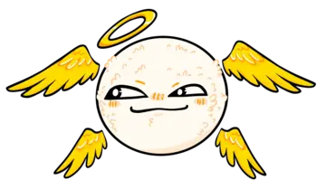
EspaMain character asset.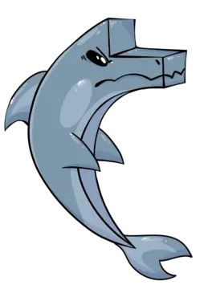
DolphinStory arcade character asset.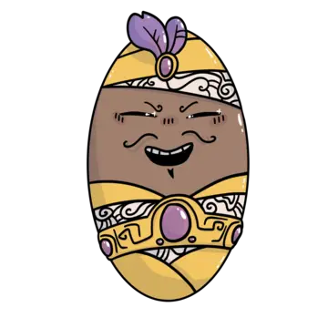
GenieMythic arcade character asset. StarVertical arcade character asset.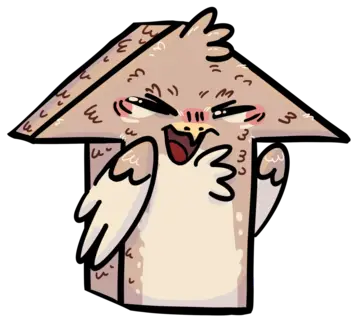
First birdBird character variation.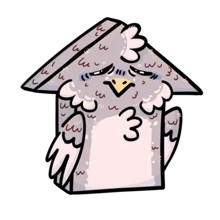
Second birdBird character variation.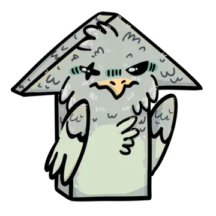
Third birdBird character variation.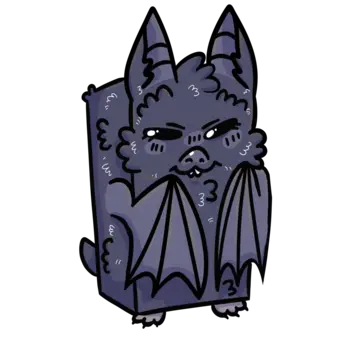
Bat 01Bat character variation.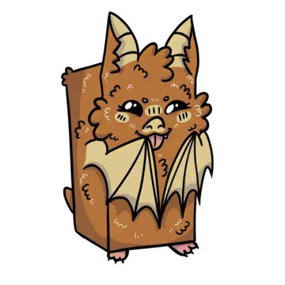
Bat 02Bat character variation.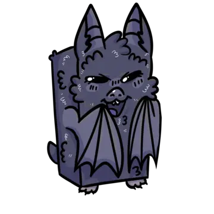
Bat 03Bat character variation.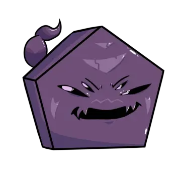
Black scorpionScorpion character asset. Orange scorpionScorpion character asset.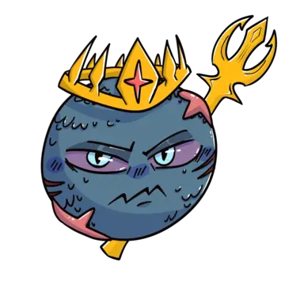
PoseidonMythic story character asset.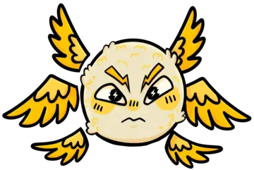
MirasStory arcade character asset.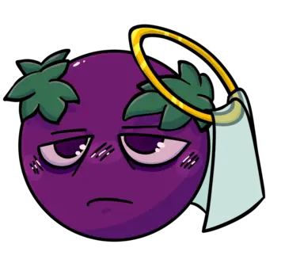
RevlaStory arcade character asset. ShashCharacter asset for the arcade world. ShishCharacter asset for the arcade world. ShushCharacter asset for the arcade world. Forest worldVertical descent arcade background.
Forest worldVertical descent arcade background.
 Cave worldVertical descent arcade background.
Cave worldVertical descent arcade background.
 Desert worldVertical descent arcade background.
Desert worldVertical descent arcade background.
 Hell worldVertical descent arcade background.
Hell worldVertical descent arcade background.
 Forest dialogueStory arcade dialogue background.
Forest dialogueStory arcade dialogue background.
 Cave dialogueStory arcade dialogue background.
Cave dialogueStory arcade dialogue background.
 Desert dialogueStory arcade dialogue background.
Desert dialogueStory arcade dialogue background.
 Hell dialogueStory arcade dialogue background.
Hell dialogueStory arcade dialogue background.
 Ocean dialogueStory arcade dialogue background.
Ocean dialogueStory arcade dialogue background.
 Volcano dialogueStory arcade dialogue background.
Volcano dialogueStory arcade dialogue background.
 Sky dialogueStory arcade dialogue background.
Sky dialogueStory arcade dialogue background.
 Space dialogueStory arcade dialogue background.
Space dialogueStory arcade dialogue background.
Ball is God?! began as WillowinWorld's first game idea: a fast vertical arcade game about falling through a divine tower and surviving stone gaps.
After the first internal cut, the team decided the game should become more than a simple arcade descent.
The project grew toward ten planned worlds, boss encounters, moral choices and a more authored mythic structure.
The story was rewritten and expanded after months of drafting, improving character abilities, world logic and moral consequences.
The team reviewed the full scale of the project after story integration and recognized it had become a larger narrative arcade game.
Active development is paused so WillowinWorld can release Nature Seed, Candy Shop and Paint Blasters first.
A hardcore one-touch vertical descent arcade about timing gaps, boss-like pressure and mythic choices.
Read the falling path, time one-touch movement, slip through broken gaps and survive traps before the run collapses.
It combines vertical arcade pressure with a planned mythic story, bosses, moral choices and authored worlds.
Planned after current releases. The world, story direction and long-form narrative draft are shaped.
Yes, for press, publisher review and store references. Source assets stay private unless requested directly.
The team completed a major story integration pass and reviewed the full scale of the project: ten worlds, moral choices, bosses and multiple endings.
After the review, active development was paused so the studio could focus on Nature Seed, Candy Shop and Paint Blasters first.
The full story was rewritten, character abilities were improved and moral consequences became clearer.
The team decided Ball is God?! should not be only a simple arcade descent, adding a mythic story and moral-choice vision.
The project began as WillowinWorld's first game idea: a fast vertical arcade game about falling through a divine tower.
Ball is God?! remains part of the studio roadmap as a larger IP planned after the current releases.
{kind=link}
{kind=link}
{kind=link}
{kind=link}
{kind=link}
{kind=link}
{kind=link}
{kind=link}
{kind=link}
{kind=link}
{kind=link}
{kind=link}
{kind=link}
{kind=link}
{kind=link}
{kind=link}
{kind=link}
{kind=link}